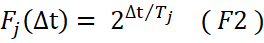
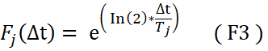
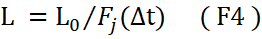
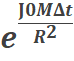
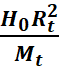
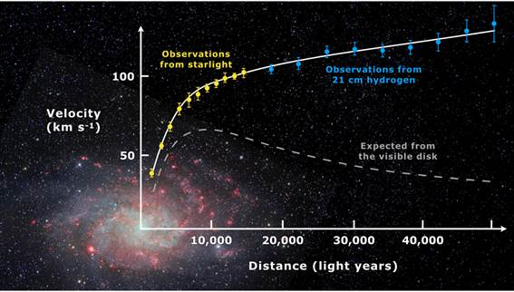
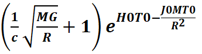
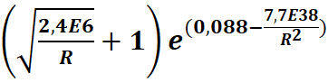
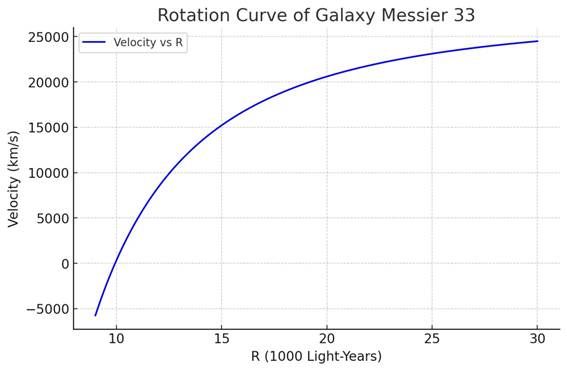

Decreasing Universe: The 'Dark Matter' Effect
João Carlos Holland de Barcellos
Abstract
After a brief review of the Decreasing
Universe (D.U.) model, we will derive a formula and the graph for the apparent velocity of stars (of a
Messier_33 galaxy) as a function of their radial distance from the galactic
center. This formula reproduces the same velocity curve traditionally
attributed to dark matter.
Keywords: Dark Matter, Hubble’s Law, Dark Energy,
Decreasing Universe, Universe Expansion, Messier 33.
1.
Introduction
The Decreasing Universe (D.U.)
theory posits that the gravitational field continuously contracts space and all
objects within it. This effect offers an alternative explanation for two key
cosmological phenomena:
1. The apparent accelerated expansion of
galaxies (without invoking dark energy).
2. The anomalous orbital velocities of
stars (without requiring dark matter).
While counterintuitive, this idea aligns with
established relativistic effects:
- Equivalence Principle: In an accelerating elevator, space and
objects inside contract in the direction of motion.
- Schwarzschild Metric: Near a massive body, radial distances are
compressed.
Though D.U. does not directly derive from these
effects, they illustrate that gravitational contraction is a plausible
mechanism.
2. Dark
Energy and Universe Expansion
The D.U. model explains the apparent cosmic
acceleration as a consequence of local
space contraction. Since Earth-bound measuring instruments also shrink, distant
galaxies appear to recede faster than expected—even if their actual motion is
unchanged. This contraction-based interpretation reproduces Hubble’s
Law, eliminating the need for dark energy.
For details, see:
- Derivation of Hubble’s Law and its relation to
dark energy and dark matter [01].
- Decreasing Universe: Distance as a function of
redshift [02].
3. Dark
Matter and Galactic Rotation Curves
Dark matter is traditionally invoked to explain why
stars in galactic outskirts orbit faster than predicted by Newtonian mechanics.
The D.U. model offers an alternative: differential gravitational
contraction within galaxies.
- Near the galactic center: Higher contraction rates shorten emitted
photon wavelengths more severely.
- Farther out:
Reduced contraction yields less wavelength compression.
Since stellar velocities are measured via redshift
(z), this differential mimics the Doppler effect,
making outer stars appear
faster—without dark matter.
4. Testing
D.U. Against ΛCDM
The standard ΛCDM model relies on dark energy and dark matter. D.U. makes a testable
prediction:
- D.U.:
More massive galaxies at the same distance should exhibit lower
redshifts due to stronger contraction.
- ΛCDM:
Predicts the opposite (gravitational redshift increases with mass).
Empirical data support D.U. and contradict ΛCDM ([03]).
5. The Dark
Matter Effect
5.1 Core
Hypothesis
The gravitational field (g) contracts space continuously, with
the rate depending on g’s intensity.
From [01], the contraction formula is:
 (F1)
(F1)
(Contraction
formula from the point of view of a
non-shrinking observer)
Where:
L (t) = Measure of L0 (decreasing) by a
"Sidereal Observer".
t0 =Initial time (arbitrary)
L0 =Length measured in t=t0
Tj = Jocaxian
Time (Time to shrink to half)
∆t = t – t0
Rewritten using the Jocaxian
Factor (Fj):

Jocaxian’s Factor
We can
also rewrite the same Jocaxian Factor (Fj)
in a more friendly way: 
We can
rewrite (F1): 
5.2
Gravitational Dependence
We know that the rate of contraction depends on the
gravitational field (g). If the gravitational field increases, the contraction
will be faster, that is, the time for space to fall by half decreases.
Therefore, we will include a new hypothesis:
The contraction time is inversely proportional to
the intensity of the gravitational field.
So, we have:
Tj(g)=Tj⋅ (F5)
Where
Tj=Jocaxian Time (Time to Length contract to
half)
gt=GMt/Rt2 (gravitational
field at Earth (Milk Way) ).
g =GM/R2 (gravitational
field at distance R from galactic center).
This leads to the generalized Jocaxian Factor:
Fj(Δt,M,R)= 
Where
= 
(Jocax Constant ≈ 1,37E-18 m²·s⁻¹·kg⁻¹).
Where
H0=Hubble Constant (≈2,2E-18 s-1)
Rt = Distance from Earth to center of Milk Way (≈2,5E20 m)
Mt= Mass of Milk Way (≈1E41 Kg)
6. Galactic
Rotation Curves
Dark Matter is a hypothesis created to explain the
anomalous speed of stars and gases orbiting galaxies. This speed appears to
increase as the orbit gets further away from the center of the galaxy. This
apparent increase in speed contradicts Newton's laws, which indicate lower
speeds for stars orbiting further away from the center of the galaxy.
The following graph -Rotation Curve for the Messier
Galaxy_33- (Taken by observational measures) illustrates this behavior:

Rotation curve of spiral galaxy Messier 33 plotted by
the observational measures [4]
.png){kind=link}
6.1 Photon
Redshift Calculation
To understand what happens to the Photon until it
reaches Earth, we must consider that:
a) Both the galaxy from which the photon originated
and the Milky Way have been contracting since their formation. We will consider
that both began the contraction at the same time T0. (We will take T0
as the time of the formation of the galaxy until the present day: approximately
13 billion years (=4E16 s).
b) The contraction rate, as we have seen, depends
on the mass of the galaxy and therefore may have different contraction rates.
The Jocaxian Factor will consider these differences.
c) It is important to note, as we saw previously,
that the contraction rate of the star
that emits the photon depends on its distance (R) from the center of the
galaxy. Thus, the redshift of the outgoing photon (considering only this
factor), will be greater the further away the star is from its origin.
d) Of course, part of the redshift will be due to
the rotation velocity of the star,
which is greater the closer the star is to the center.
e) This difference in the outgoing redshift as a
function of the distance from the center of the galaxy, will define the “dark
matter effect” and its peculiar curve.
f) Let us consider that T1 is the instant at which
the photon is emitted from the source galaxy towards Earth. When it leaves the
source galaxy, it ceases to contract, since the gravitational field of the
galaxy becomes negligible.
g) We will calculate the apparent velocity of the
star (in Messier 33 galaxy) (as a function of its distance from the center) considering the redshift up to the moment it
leaves the galaxy. (We will not
consider the “dark energy” effect, which is the contraction of our galaxy after the photon leaves the emitting
galaxy until the Earth).
6.2- Let's do the math
To
simplify, let's assume that the galaxies formed at the same time. In this case, the photons began to contract differently
for each galaxy with different masses.
Redshift
is the variation in wavelength in relation to a standard on Earth.
Initially,
shortly after their formation, both galaxies (the emitter (Messier_33, with a
lower mass) and the receiver (the Milky Way, with a higher mass) emitted
photons at the same wavelength λ0.
After
about 13 billion years (T0), the contraction rates were different
and, therefore, the wavelength decreased differently for both galaxies.
In the
Milky Way, the photon after T0 will have a shorter wavelength:
λT0 = λ0/FTJ(T0) = λ0/exp(H0T0)
Where:
λ0 = Wave length at beginning
λT0 = wave length of photon in Earth after T0
FTJ = Jocaxian Factor on Earth
T0 = Time from beginning of Galaxy until
Now (13G Years)
In Messier_33 the contraction rate is different, and
we must use the general Fj:
λM0 = λ0/Fj(T0,M,R)
Where:
λM0 = wave length of photon in
Messier_33Earth after T0
Fj(T0,M,R)= generalized Jocaxian Factor
M = Messier_33 Mass (1,4E39 Kg)
R = Distance of star to center of Messier_33
However, the Messier_33 star that emits the photon,
will present a redshift that depends on its rotation
speed.:
V = cz
Where c = Speed of light
and z =
redshift
However
V
= SQRT(MG/R)
z
= V/c = (λM1 / λM0 - 1 )
Where
λM1 = wave length of photon in
Messier33 due rotation velocity
λM1 = λM0
( SQRT(MG/R)/c + 1 )
The final redshift relative to the Milky Way will be:
Zf = (λM1 - λT0 )/ λT0
So,
Zf = (λM0 ( SQRT(MG/R)/c + 1 ) )/ λT0 -1
Replacing we will have:
Zf = (exp(H0T0)/ Fj(T0,M,R) ) (SQRT(MG/R)/c + 1) -1
But v = cz ,
then the speed measured on Earth (without considering the effect of “dark
energy” = Our contraction during the photon’s journey), will be:
V
= c { (exp(H0T0)/ Fj(T0,M,R) ) (SQRT(MG/R)/c + 1) -1 }
Substituting Fj(T0,M,R) we
will finally have the galaxy's rotation curve:
Vt=c ( 
Galaxy Rotation Curve (Apparent Velocity)
Where:
C =
Speed of Light ( 3E8 m/s )
M =
Mass of the Emitting Galaxy ( 1,4E40 Kg )
G =
Gravitational Constant ( 6.7E-11 )
R =
Distance from the Star to the center of the galaxy
H0 =
Hubble Constant (2.2E-18)
T0 =
Contraction Time (13 billion years = 4E16s)
J0 =
Jocax Constant ( 1,37E-18 )
6.2-For
the galaxy Messier 33
Substituting the constant values we will have the Speed
of the Messier Galaxy Star Observed from Earth:
Vt=3E5 ( 
Star Speed in km/s as a function of distance to the
Messier Galaxy_33
We can
finally plot the rotation curve for Messier_33 predicted by the
"Decreasing Universe" theory:

7. Conclusion
The D.U. model provides a unified framework for:
- Apparent cosmic acceleration (replacing dark energy).
- Anomalous rotation curves (replacing dark matter).
By reinterpreting gravitational contraction, it
challenges the need for undetected exotic components in cosmology.
References
[01] Derivation of Hubble’s Law
[02] Distance as a function of
redshift
[03] Redshifts Refute ΛCDM
[04] Messier 33 Rotation Curve
[05] Galaxies Grow Hotter with
Age
[06] Decreasing Universe Theory:
The Tully-Fisher Relation
https://philarchive.org/rec/BARDUT-3
[07] Decreasing universe: the CMB and the
age of the universe
http://medcraveonline.com/PAIJ/PAIJ-09-00372.pdf
[08] Decreasing Universe Theory:
Galaxies without Dark Matter (NGC 1052-DF2, DF4, and
DF9)
https://jocaxx.github.io/DUniverse/Todos/DUT_NGC1052_ENG.pdf
[09] Decreasing Universe: AI Analysis
of Article Data Disproves L-CDM Model
https://philpapers.org/rec/BARDUT-2
[10] What if the Universe Is NOT Expanding?
https://insertphilosophyhere.com/what-if-the-universe-is-not-expanding/
[11] The instability of critical and underdense Friedmann spacetimes at the Big Bang as an alternative to dark energy https://royalsocietypublishing.org/rspa/article/482/2338/20250912/481920/The-instability-of-critical-and-underdense
[12] Dark energy
'doesn't exist' so can't be
pushing 'lumpy' universe apart, physicists say
https://phys.org/news/2024-12-dark-energy-doesnt-lumpy-universe.html
[13]Decreasing
Universe Theory: Main Articles
https://jocaxx.github.io/DUniverse/Articles.pdf